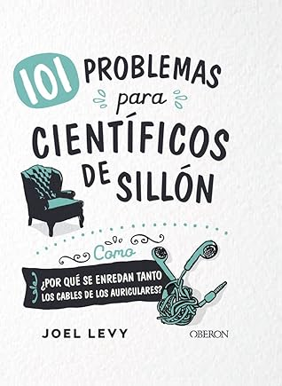

101 problemas para científicos de sillón
Reseña por Jorge I. Zuluaga

Ver detalles · Ver reseña en GoodReads (necesita cuenta)
El libro contiene 101 datos científicos presentados de forma original, a través de una sencilla historia o un cuento de no más de una página y media, complementados por varios recuadros con información en profundidad sobre el dato en cuestión.
Si bien al principio creí que los datos terminarían siendo medio trillados, lentamente me fui dando cuenta de que el autor, Joel Levy, había escogido datos muy originales que cubrían una amplia variedad de temas, desde las matemáticas, la topología y la estadística, hasta llegar a la biología, la ecología o la bioquímica.
¿Por qué entonces 4 estrellas? La razón es que las historias al principio de los datos son, a veces, un poco enredadas y difíciles de digerir. En más de una ocasión me tocó releerlas nuevamente para entender cabalmente lo que significaban. Tal vez algunos lectores más acostumbrados a los cuentos cortos las encuentren fáciles de digerir, pero a mí me costaron unas cuantas.
El libro es fácil de leer (yo lo leí a ratos, en las noches, en momentos en los que me distraía con facilidad en mi casa), pero los datos son difíciles de recordar y tuve que tomar nota de algunos de ellos para usarlos en mis propias aventuras divulgativas. ¡Definitivamente es un buen texto para docentes de ciencia!
Para citar algunos ejemplos del nivel del libro, les presento algunos datos:
- ¿Por qué las cosas se vuelven marrones cuando se calientan? La explicación tiene que ver con un fenómeno conocido como caramelización, que se explica con la reacción de Maillard (Dato 006).
- ¿Por qué hay tantos hombres que sufren alopecia? Tal vez la respuesta está en el sexo (Dato 025).
- ¿Podríamos respirar en el agua si tuviéramos agallas? El problema no es anatómico: somos demasiado exigentes y el agua no tiene tanto oxígeno (Dato 027).
- ¿Por qué los mocos son blancos, amarillos y verdes? La respuesta está en la mieloperoxidasa, pero deben leer el dato para saberlo (Dato 037).
- ¿Está el gato vivo o muerto? ¿Sabe el amigo de Wigner si el gato está vivo o muerto? Espero que sepan a qué me refiero. El libro lo amplía (Dato 050).
- ¿Podríamos vivir en una simulación? ¡Mejor no lo averigüemos con otra simulación! (Dato 054)
- ¿En realidad se puede encender la gasolina con un cigarrillo? ¡No es tan fácil! (Dato 061)
- ¿Qué pasaría si la Luna no estuviera? ¡La Tierra sería un infierno! Y no es solo por la estabilidad en la inclinación del eje de rotación (Dato 068).
- ¿Habrá existido alguna vez en la historia de la Tierra un copo de nieve igual a otro? ¡Imposible! (Dato 076)
- ¿De qué color es realmente el pelo de un oso polar? ¡Transparente como una pompa de jabón! (Dato 083)
- ¿Podríamos arreglar muchos problemas de la Tierra comiendo insectos? ¡Sí! Pero no estamos preparados para esta discusión (Dato 092).
- ¿Cuál es la temperatura del aire más alta en la cual ya no es posible vivir por más de unas horas? ¡35 grados a la sombra húmeda! Y hay lugares en la Tierra donde podría alcanzarse esa temperatura más pronto que tarde (Dato 096).
Ahí les dejo ese abrebocas para que consigan el libro y lo lean.
P.D. Leí el libro como parte de un ejercicio en mi club de lectura: una de las personas del club (la dueña del libro, María del Mar Giraldo, quien además tomó la iniciativa del ejercicio) pasó el libro a otra persona que, después de un tiempo razonable, se lo pasó a una tercera persona y así sucesivamente. Finalmente terminó en mis manos, de donde regresará a su dueña. Lo llamamos una cadena de lectura (en la que yo fui el último eslabón). Gracias al club por propiciar este ejercicio (¡se los recomiendo a ojo cerrado!), sin el que posiblemente no me hubiera topado con el libro.